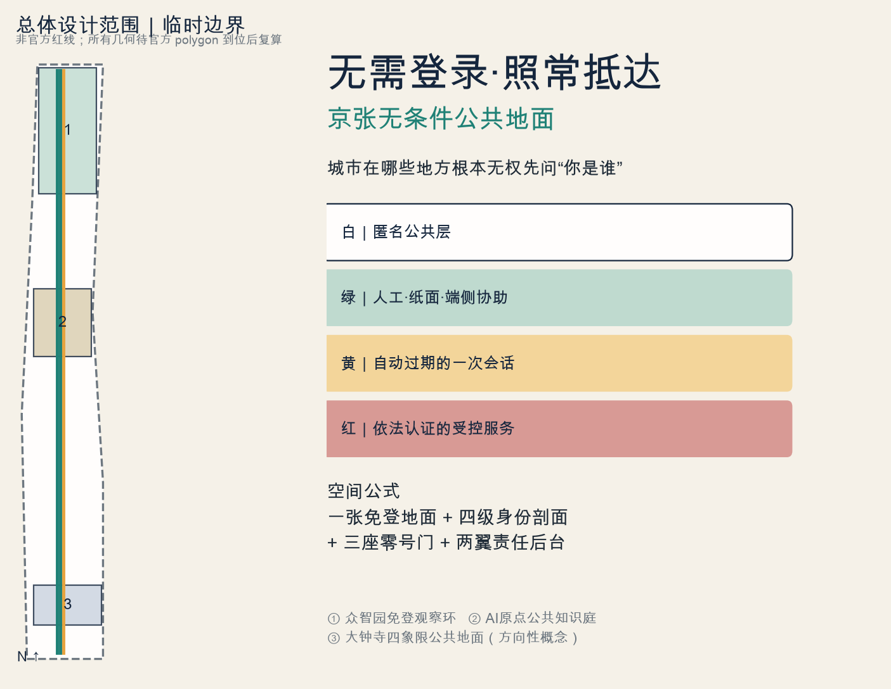
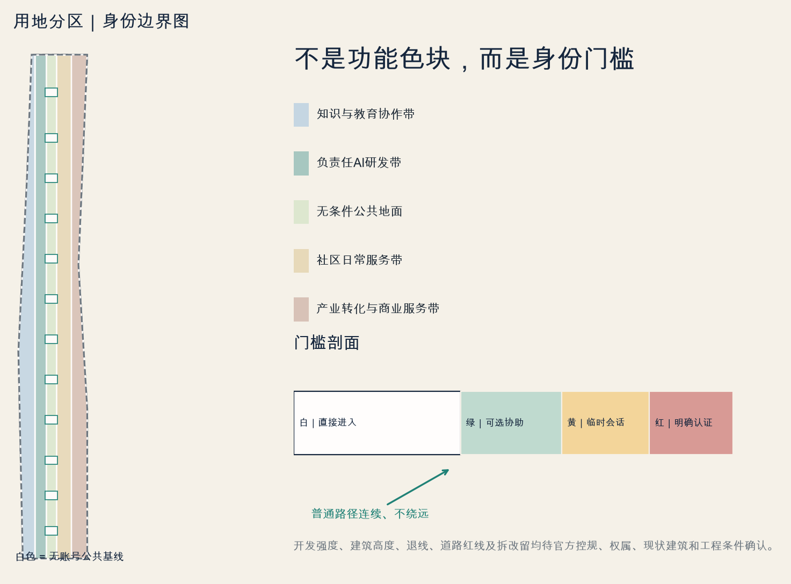
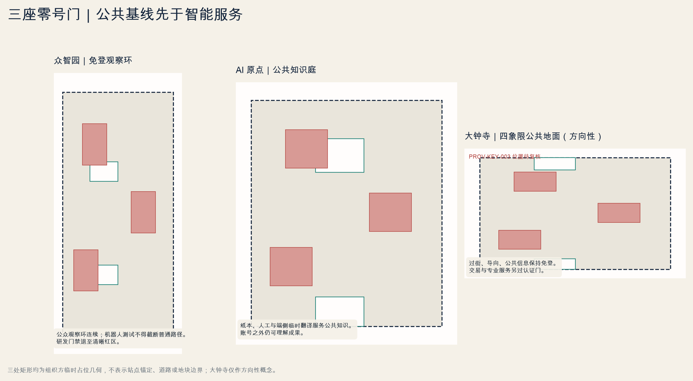
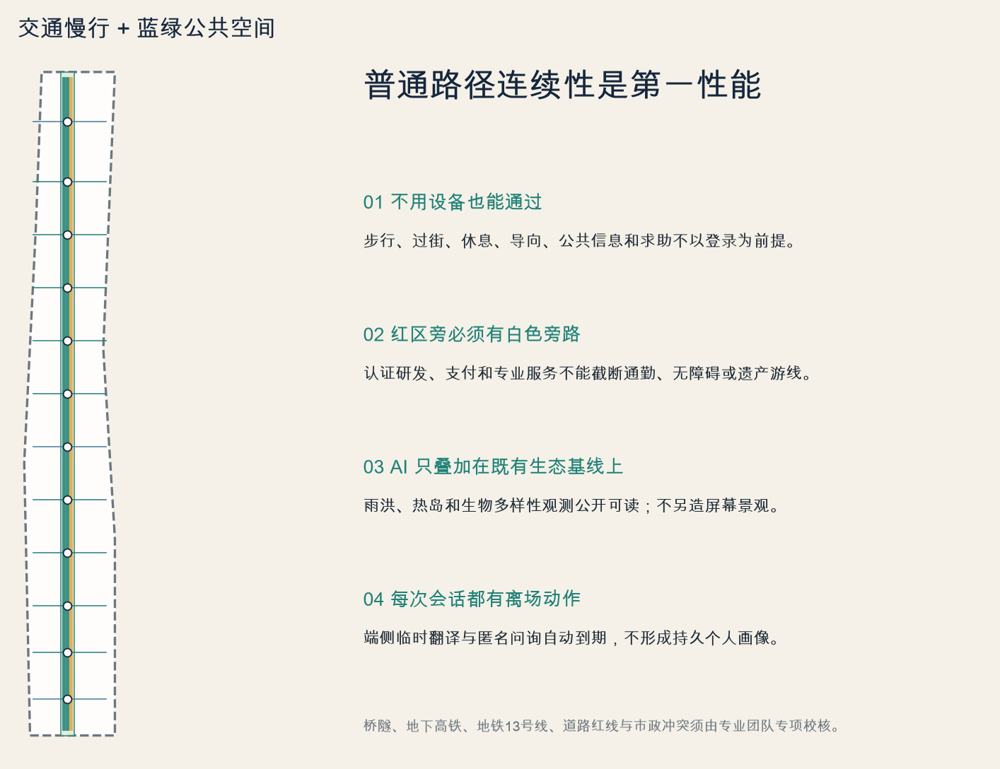
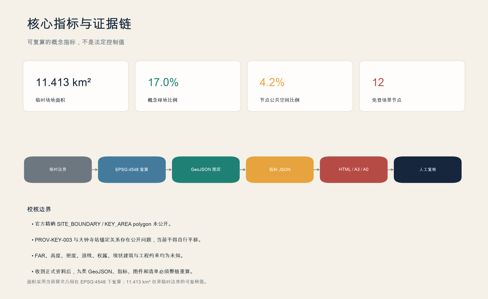

无需登录·照常抵达：京张无条件公共地面
把身份基础设施画进城市剖面：任何普通路过者在不注册、不持有智能手机、不留下持久画像时仍可沿免登地面照常通行；人工与纸面、一次性会话和依法认证依次分级，所有红色认证区旁保留不绕远的白色公共路径。
无需登录·照常抵达：京张无条件公共地面
空间公式：一张免登地面 + 四级身份剖面 + 三座零号门 + 两翼责任后台。任何红色认证区旁，都有一条不绕远的白色公共路径。
设计依据与资料清单
本方案以公开征集公告、面向智能体任务书和仓库场地包为任务依据，把官方事实、临时几何、背景案例与概念设计严格分层。公告界定了 43.6 平方公里统筹研究范围、约 11.4 平方公里总体设计范围和三处合计 368.4 公顷重点区域；场地包中的总体边界和重点区矩形仍是临时粗略几何，只可用于投稿生成、内容讨论和结构化复算，不能充当官方红线、权属界线、法定控规或工程定位。来源 来源 因而本文中的空间动作均为概念建议；凡涉及容积率、建筑高度、建筑密度、退线、道路红线、市政容量、消防、文保和实施主体的结论，均须等待正式资料与专业复核，不以视觉上的精确感替代法定依据。
设计证据采用“来源—判断—图层—指标—风险”的短链：来源清单登记公告、任务书、场地包和七个全球一手案例；GeoJSON 表达概念空间对象；指标文件保存可复算结果；矩阵核对任务和设计深度；正文只在关键判断后保留邻近引用。京张铁路遗址公园、清华园车站等历史信息以主管部门公开资料为背景，不据此推导未经批准的保护范围或建设条件。来源 来源 所有插图拟由投稿包自身几何和指标生成，不复制案例图片、同行文案、企业商标或第三方地图；使用本机通用字体时也要在版权声明中登记。
“无需登录”不是对所有城市活动的绝对口号，而是面向任何普通路过者的公共基础承诺。身份基础设施被画成四级剖面：白色匿名公共层承载步行、无障碍、基础导向、休憩、公共信息和基本参与；绿色协助层提供人工、纸面或不形成持久档案的端侧帮助；黄色一次性会话层在明确提示后处理当次任务并自动过期；红色依法认证层才承载支付、受控研发、诊疗、法律或其他受监管服务。四级必须通过地面、标牌、界面和工作人员被清楚识别；所有红区旁都保留距离不显著增加、品质不降低的白色旁路。标准 深度

三层范围工作框架
方案以三个尺度逐级落实同一条公共承诺。统筹研究范围约 43.6 平方公里，研究“三区两翼”如何把高校院所、企业、社区、生态和公共治理组成可长期运营的 AI 创新生态；该层输出产业协作、案例转译、活动体系和治理原则，不绘制超出已知资料的法定用地控制。总体设计范围约 11.4 平方公里，以京张铁路遗址公园及相连街道铺开“一张免登地面”，任何普通路过者都能获得连续步行、骑行、信息和休憩。重点区域包括众智园 192.1 公顷、北京 AI 原点社区 104.3 公顷、大钟寺 72.0 公顷，合计 368.4 公顷，分别形成免登观察环、公共知识庭和四象限公共地面，并通过三座零号门标示身份等级变化。来源 指标
三层不等于三套割裂方案。统筹层先决定“公共权利不因身份凭证而缩水”的治理目标；总体层把目标转译成一张免登地面、四级身份剖面、三区两翼和连续蓝绿慢行系统；重点区再把白、绿、黄、红四层画进平面与剖面。每个节点都必须回答：白色普通路径在哪里，是否绕远；绿色帮助由谁提供；黄色会话何时自动过期；红色认证为何合法必要；离场时哪些数据清零，谁能复核。替换正式边界时，土地利用、绿地、公共空间、道路、建筑和分期图层应重新裁切，面积、比例和相交关系应重新计算，图纸与 HTML 同步刷新。空间数据 深度
当前 PROV-KEY-003 是面积与排序占位矩形，并非以大钟寺站为锚的正式多边形；其质心与大钟寺站关系存在显著偏差，社区问题单已要求后续校核。因此大钟寺的“四象限抵达”只表达站城一体化方向和功能关系，不声称既有几何就是站点范围，也不据此确定地下通道、路口工程或开发量。来源 空间数据 正式边界到位后，应以站点出入口、道路红线、轨道保护区、权属和现状测绘为基准重锚，再复算图层和项目清单；在此之前，该重点区只进入内容评审，不应进入依赖精确几何的专业评分。

统筹研究范围产业与未来城市研究
总体概念命名为“无需登录·照常抵达：京张无条件公共地面”，英文为“NO LOGIN REQUIRED: Jing-Zhang's Unconditional Public Ground”。品牌图形是一条不断开的白色地面线，穿过绿、黄、红三种身份门槛；红色方块总被白线从侧面穿过，直观表达“依法认证可以存在，但不能截断公共城市”。配色使用白色匿名层、公园绿色协助层、信号黄色会话层和警戒红色认证层，底图为市民深蓝；字体采用登记清权的通用字体。铁路轨道、道岔与信号被转译为连续、选择和风险可见的公共制度，但不虚构具体遗产事件或官方品牌授权。来源 标准
“三区两翼”承担不同的身份制度成本。众智园以“免登观察环”把公众观察路径与受控全栈验证并置；北京 AI 原点社区以“公共知识庭”让知识解释、纸面资料、人工答疑和临时工具先于机构账户；大钟寺以“四象限公共地面”保障站点各方向的匿名通行。中关村科技服务翼作为责任后台，承接知识产权、法律、算力、认证和企业服务，使账户与合规成本由机构承担而非转嫁给路人；小月河场景赋能翼负责社区日常、无账户体验、环境维护和聚合反馈。三区提供空间样本，两翼承担专业责任，免登地面允许市民只路过、不参与。来源 深度
七个一手全球案例只提取机制，不复制空间形态。赫尔辛基 AI Register 提示对算法用途、数据和反馈渠道作公开登记；阿姆斯特丹 Tada 强调包容、个人控制、人尺度和“数据不是最终裁决”；新加坡榜鹅数字园区展示共用数字平台如何连接产业、校园与运营；巴塞罗那 Decidim 展示开源参与基础设施与可审议规则；MIT Kendall Square 说明科研、企业、住房和开放空间的混合生态；蒙特利尔负责任 AI 宣言强调自主、包容和人的最终责任；赫尔辛基 Kalasatama Living Lab 展示居民、企业、政府与研究者共同进行小尺度试验。来源 来源 来源
转译后的本地规则是：公开登记每个公共 AI 场景；默认提供非数字入口；测试先小尺度、可暂停；决策保留人工责任；公共空间与研发空间混合但权限清楚；居民反馈只做必要、聚合和有期限的记录。巴塞罗那的参与机制、Kendall Square 的混合创新街区、蒙特利尔的责任原则和 Kalasatama 的城市实验室分别支撑“可审议、可相遇、可问责、可试停”的四个运营模块。来源 来源 来源 这些是背景性经验，不构成北京的控规、数据法规或建设标准；本地实施必须服从中国现行法律、正式规划和专业审查。来源
总体设计范围城市更新与控规深度城市设计
总体空间公式为“一张免登地面、四级身份剖面、三座零号门、两翼责任后台”。京张铁路遗址公园及其平行街道形成南北连续白色匿名层，东西向通学、通勤和社区联系从中穿过；白层提供通行、方向、休憩、饮水、卫生间和基础公共信息，不能以扫码换取。绿层由人工、纸面和端侧工具协助；黄层处理明确同意的一次性任务并在离场点自动过期；红层进入实验室、支付、企业系统或专业咨询，必须显示认证原因、保留期限、人工责任和不绕远白色旁路。空间数据 深度
城市更新采用“先铺免登地面、再改身份门槛、后做受控增量”的顺序。近期优先修补步行、骑行、无障碍、站点接驳和基础公共信息，利用现有建筑设置人工服务台与纸本地图，并标出黄色会话的离场清零点；中期根据现状测绘和权属复核开展低效首层、园区边界和桥下空间的适应性改造；新增研发、居住和服务体量必须等待法定控规与市政承载条件。概念土地利用图仅表达公共绿地、创新混合、社区服务和交通设施的相对关系；建筑基底为类型原型，不代表现状拆除决定。空间数据 标准
交通与新基础设施以“普通路径不被测试占用”为底线。机器人、自动配送或传感验证只能在限定时段和清晰边界内运行，交叉口设置物理停止线、人工监督点和连续绕行；公共 Wi-Fi、边缘算力、数字标牌与能耗设施必须保留离线信息和故障降级。雨洪、供电、通信、消防、卫生和环卫条件尚未获得完整工程资料，端侧算力节点仅作位置逻辑建议，服务半径、容量和设备选型均待专业深化。深度 空间数据
本方案不会给出看似精确的 FAR、高度或建筑密度。正式控规条件缺失时，这些指标在机器文件中应为 unknown 或 pending_control；可计算的仅包括临时边界内的图层面积、比例、数量和连通关系。设计评审应先用 credential boundary map 检查白色地面是否连续、红区旁路是否不绕远，再用身份门槛剖面检查绿黄红层的责任和离场清零，最后才讨论重点区功能、强度与形态。指标 深度
重点区域详细设计
众智园 AI 自主创新加速区形成“免登观察环”，并在研发界面设置“众智零号门 / ZHONGZHI GATE ZERO”。连续白色路径沿受控测试区外围成环，任何普通路过者都可观察公开展示、休憩和取得基础导向，不需要进入研发账户体系；绿色人工解释、黄色临时演示和红色模型测试依次后退。建筑首层形成公开说明廊与测试口袋，研发后勤与公众流线分离；若机器人进入共享空间，必须有时段、速度、停止触发和现场责任人，且不得封堵或迫使白色无障碍路径绕远。空间数据 深度
北京 AI 原点社区形成“公共知识庭”，并设置“原点零号门 / ORIGIN GATE ZERO”。它是一组分布在校区—园区—社区联系线上的开放院落、首层台面和街角：开放源代码诊所、成果解释、纸面资料、人工答疑和端侧临时翻译并列。任何路过者都可阅读、询问和离开；只有提交代码、预约设备、办理人才或企业业务时才跨入红色机构系统。黄色临时沙盒在离场清零点自动销毁会话，绿色人工服务不以个人手机作为前提，居住和科研边界由专业运营规则控制。空间数据 来源
大钟寺 AI 产业聚集区形成“四象限公共地面”，并设置“大钟寺零号门 / DAZHONGSI GATE ZERO”。四个方向先以白色匿名路径连续相接，路人可取得可读地图、人工帮助和无障碍信息，再自行决定是否进入终端体验、企业展示、商务交易或国际活动。地面标记显示步行时间、服务状态与身份等级，支付、门禁和企业数据留在红色运营系统；红区必须被白线绕过且不增加显著距离。由于 PROV-KEY-003 尚未以车站正式边界重锚，四象限、连通工程、地下空间和开发量均为方向性设计，待 Issue #1029 所述资料补齐后重绘。来源 空间数据
三座零号门共同构成“身份基础设施朝圣路线”，但不以巨构奇观取胜：众智零号门展示公众如何在免登观察环上看见测试边界，原点零号门展示知识如何先于账户公开，大钟寺零号门展示红区旁路如何保持四向连续。每处都设置 credential boundary map、四级门槛剖面、离场数据清零点和责任说明，展示经许可的公共改进，不展示未经授权的个人排名、企业 Logo 或人脸。建筑拆改留需以现状测绘、结构安全、权属、文保与控规为前置条件。深度 标准

AI 创新生态、人才画像与 AI+ 场景
六类画像都从“一个普通路过者能否不交凭证继续走”开始。①科研人员或初创工程师需要算力、测试、知识产权与同行交流，但红色实验责任不能扩张到公共地面；②带儿童的照护者需要连续无障碍和不被设备追踪的停留；③没有智能手机或不愿注册的老年访客需要纸本信息、座椅与人工帮助；④视障通勤者需要触觉、声音和一致的白色路径语法；⑤服务与维护人员需要离线工单、设备急停和不依赖个人手机的交接；⑥国际访客或新居民需要多语解释与城市服务，但不应被迫建立长期画像。来源 深度
场景卡统一包含位置、对象、智能线、普通线、最小数据、人工复核、运营主体和退出触发。下列十二卡均为概念运营原型，位置需随正式几何校准；其中 08、11、12 是产业测试验证场景：
| 卡 | 场景与位置 | 四级身份、数据和治理 |
|---|---|---|
| 01 | 触觉与纸本双语导向／全带抵达点 | 智能线提供端侧路线建议；普通线提供凸点图、纸图与人工问路。只处理当次起终点，不存轨迹；设施运营员复核，设备故障即切纸本。 |
| 02 | 免登录遗产漫游／京张铁路遗址公园 | 智能线在本地设备讲解；普通线用铭牌和导览册。只记录聚合设备状态；文史编辑复核，内容存疑即下架。来源 |
| 03 | 人工兜底 AI 信息台／零号门节点 | 绿层由工作人员查询和打印，黄层可检索公开服务。问题文本离场后删除；值班主管复核，涉及专业建议即转红色机构。 |
| 04 | 无账户共学／公共知识庭 | 黄层提供自动过期沙盒，白绿层提供白板、书籍和同伴答疑。不建学习档案；社区运营者复核，未成年人场景需监护。 |
| 05 | 公共模型状态板／免登观察环 | 黄层显示版本、用途、限制和停机记录，白层为印刷告示。只读取公开登记；治理团队复核，状态不明即暂停展示。来源 |
| 06 | 匿名健康导航／社区服务点 | 智能线仅导航到合法机构；普通线提供目录和人工转介。不做诊断、不采病历；专业人员复核，出现急症直接转急救。 |
| 07 | 无画像商业发现／大钟寺方向 | 智能线按当次条件列出附近服务；普通线用分类地图。禁用跨次推荐；街区运营方复核，交易在商户授权系统完成。 |
| 08 | 机器人测试旁路（产业验证）／众智园 | 测试线设物理边界、速度限制和日志；普通线宽度与无障碍连续性不降低。测试方与现场安全员双复核，人员闯入或急停即停测。 |
| 09 | 无人脸活动入场／公共活动节点 | 智能线可用一次性票码；普通线用纸票与人工名册。非安全必要不采人脸；活动主办方复核，系统失效即人工放行。 |
| 10 | 纸本与实体筹码参与／小月河场景翼 | 智能线提交匿名意见；普通线投纸卡或实体筹码。公开聚合结果而非个人记录；社区议事员复核，争议项进入线下会议。来源 |
| 11 | 端侧临时翻译（产业验证）／公共知识庭 | 黄层设备本地处理并提示误差；白绿层由人工或印刷多语材料支持。离场点清除音文；语言服务人员抽检，低置信度转人工。 |
| 12 | 免画像终端与服务评测（产业验证）／大钟寺方向 | 访客以临时模式试用终端；普通线只观看或由演示员操作。不创建营销画像；独立评测员复核，发现诱导授权或越界采集即撤场。 |
十二卡不以“有 AI 就先进”为评价标准，而以普通线服务质量、最小数据、人工责任和停用能力为共同门槛。卡片状态应进入公共登记，说明运行时段、运营者、数据类型、投诉路径和最近一次审查；停止测试不会关闭公共空间。医疗、法律、支付、门禁和科研数据等高风险活动必须遵守专业法规和机构授权，免登录承诺不跨越这些边界。来源 深度
用地、建筑规模与拆改留方案
概念用地结构以连续公共绿地和慢行基线为骨架，在可达节点布置创新混合、社区服务、文化展示与必要交通设施。创新混合地块不是全时开放实验室，而是把公开首层、共享院落和受控研发分层；社区服务靠近普通路径，任何数字服务都有人工或物理替代；绿地承担生态、休憩、遗产解释与低风险展示，不以商业活动挤占基本通行。用地多边形须完整覆盖临时总体边界且内部不重叠，面积比例由几何复算，不用文字估计。空间数据 标准
建筑策略采用“保留优先、轻改先行、增量后置”。在缺少完整现状建筑、年代、结构、权属和保护清单时，不对具体建筑作拆除判定；建筑图层只表达六类可复核原型：零号门节点、适应性研发、社区服务、人才生活、后勤设施和受控测试。原型在后续测绘中逐栋匹配，先检验结构安全、历史价值、首层连续和能耗，再决定保留、修缮、改造或替换。零号门沿白色免登地面布置，红色认证空间退至内院或楼上，物流与测试入口不得切断或迫使白线绕远。空间数据 深度
开发规模只报告可由概念建筑基底复算的 footprint，并明确它不等于现状或获批总建筑面积。FAR、建筑高度、BCR、绿地率法定值、建筑控制线和退界均列为待正式控规确认；展板如使用体量示意，应标注“概念原型、非审批方案”。风貌上建议保留铁路工业尺度与中关村朴素研发气质，以可维护材料、清晰檐口和开放首层形成连续界面，地标通过公共制度和导向识别而不是夸张造型获得辨识度。指标 深度
空间供给与运营同时核对。每个公开首层需明确开放时段、无账户服务、维护责任和夜间边界；每个受控研发单元需明确认证理由、危险等级、物流和应急；混合使用不等于权限混乱。正式深化将以地籍、现状测绘、房屋安全、文保、消防、日照、交通和市政资料替换原型，重新计算总建筑面积与容量，并通过专业团队审查。来源 深度
交通、轨道、市政与公共服务设施
交通系统把“照常抵达”作为连续性指标，而不是把手机导航作为基础设施。南北免登地面与东西社区连接形成步行、骑行和无障碍网络，轨道站、园区门口、桥下和大路口用 credential boundary map 标出白、绿、黄、红区域。白层以物理导向、照明、遮荫、座椅和饮水组成；绿黄层可提供人工帮助、实时路径和临时翻译，必须显示数据用途与离场清零点。道路图层只表达概念中心线和慢行关系，正式红线、交叉口渠化、信号配时、停车供给与轨道保护需由主管部门和专业顾问确认。空间数据 深度
站点一体化优先处理从车门到街道、从街道到公共基线的全过程。五道口、清华东路西口和大钟寺等既有站点关系只能依据公开事实做战略讨论；在缺少正式站点出入口与施工条件时，不承诺地下连通。非机动车停放放在普通线边缘且不侵占盲道，网约与配送在受控停靠点完成，机器人测试用颜色、触觉和物理隔离与行人分开。PROV-KEY-003 的站点关系必须先重锚，才可进入四象限工程设计。来源 空间数据
市政与新基础设施采用“故障降级”和“机构承担”。边缘算力、公共显示、环境感知和通信设备以可关闭模块嵌入既有设施，断网时恢复静态导向与人工服务；不得用个人手机替代工作人员设备或消防通信。数据中心、变配电、分布式能源、雨洪、给排水、环卫和应急容量目前资料不足，方案仅预留协同接口，不给出容量承诺。空间数据 深度
公共服务设施同时服务创新人才与既有居民，包括托育、健康转介、文化学习、法律与知识产权咨询、人才服务、维修和社区议事。基础咨询可匿名进入；涉及个人权益、交易或专业结论时，通过清楚的授权阈值转入合规系统，并保留人工申诉。中关村科技服务翼负责专业后台，小月河场景赋能翼检验日常可用性，两者共同避免把企业展示变成公共空间的唯一目的。来源 深度

蓝绿空间、公共空间与城市风貌
京张铁路遗址公园被视为连续白色免登地面，而不是一条设备展廊。其首要职责是生态、通行、休憩和历史理解，AI 展示只能作为可绕行、可关闭的附加层。清河、小月河及沿线绿地形成东西生态联系，结合雨洪、遮荫、运动、儿童和安静空间；具体河道蓝线、防洪标准和生态控制需等待正式资料。临时几何中绿地与公共空间比例可复算，但不能替代法定绿地率或公园边界。来源 空间数据
公共空间采用一致的四级身份语言：白色标识匿名公共层，绿色标识人工、纸面与端侧协助，黄色标识自动过期的一次性会话，红色标识依法认证。红区入口前用简明卡片说明认证理由、数据、责任与退出方式，白色旁路在 credential boundary map 上连续可见。每个数字节点旁设置可直接理解的物理设施，不把二维码当作唯一说明；故障、争议或维护不足时，先关闭黄红层而不是关闭白色地面。空间数据 指标
三座零号门以制度可见性塑造风貌。众智零号门在免登观察环上展示白线如何经过红色测试区；原点零号门在公共知识庭中并列白色阅读、绿色人工和黄色端侧工具；大钟寺零号门在四象限公共地面上展示四向白线与红区不绕远旁路。三者都标出离场数据清零点，并连接贡献墙、年度责任报告和公共问题档案。Logo、人物、项目名与贡献记录必须获许可，不能擅自使用企业商标或个人肖像。来源 深度
文化叙事取自铁路“轨道、道岔、信号、时刻”这些通用工程语汇：轨道是公共连续性，道岔是自主选择，信号是数据与风险可见，时刻是可预测服务。它把自主工程传统连接到可问责的 AI 城市，但不把概念地标表述为已批准建设，也不复制历史图像。建筑基调建议克制、耐久、可维护，屋顶和体量服从正式控规与文保审查；公共艺术优先通过公开征集和版权协议获得。来源 标准
更新项目清单、实施政策与分期计划
更新清单分三期。近期为“免登地面 0—2 年”：JZ-01 连续白色导向与纸本地图、JZ-02 无障碍和绕远率审计、JZ-03 三座零号门轻量节点、JZ-04 身份边界与 AI 场景登记板、JZ-05 小尺度机器人旁路试验。中期为“身份门槛改造 3—5 年”：JZ-06 公共知识庭、JZ-07 免登观察环、JZ-08 小月河社区参与点、JZ-09 中关村责任后台。长期为“正式条件下的站城与增量 5 年以上”：JZ-10 大钟寺重锚后的四象限公共地面、JZ-11 经控规批准的混合增量、JZ-12 蓝绿与市政系统完善。空间数据 深度
实施顺序由依赖条件而非宣传节点决定。近期轻量项目仍需无障碍、消防、交通、运营和版权审查；中期建筑改造需权属、结构和规划许可；长期工程必须以正式边界、控规、站点、市政和资金为前提。建议建立跨部门项目台账，每项写明公共线、智能线、责任主体、数据清单、投诉渠道、暂停条件和年度复核。任何运营方无法维持人工替代或普通旁路时，先缩减智能服务。深度 来源
长期活动品牌建议为“京张无需登录周 / Jing-Zhang No-Login Week”，包括零门开放日、端侧工具诊所、模型状态公开课、纸本共创会、无障碍测试步行、国际案例对话和开发者贡献夜。活动不要求统一 App；现场、电话、纸本和网页提供等价报名或免报名环节。贡献荣誉以可验证项目与公共改进为对象，经本人或机构授权后展示，不做个人行为评分。开发者社区负责技术解释，社区组织负责包容性评估，专业机构负责高风险审查，运营团队公开年度问题和改进清单。来源 来源
招商、政策、资金与政府安排在本稿中均为概念建议，不是承诺。绩效不以账户数和数据量为主要目标，而以普通线可用率、无障碍连续性、人工服务响应、退出成功率、测试停用合规、居民理解度和产业验证质量衡量。每一阶段结束后依据公开反馈调整；如正式资料改变边界或重点区关系，应版本化重算而不是掩盖差异。指标 深度
指标体系、面积复算与合规矩阵
指标分三类。第一类为可由投稿几何复算的空间指标：临时总体边界面积、重点区数量与占位面积、绿地面积与比例、公共空间面积与比例、概念建筑基底面积、道路长度、场景节点数和分期面积。第二类为等待正式资料的法定或工程指标：FAR、建筑高度、BCR、退线、道路红线、停车配建、市政容量、消防与防洪标准。第三类为运营绩效：普通线可用率、无账户完成率、人工兜底响应、退出后残留检查、无障碍中断次数、测试暂停次数、公众理解度和产业验证通过质量。深度 指标
现有临时总体边界复算约 11,412,825.386 平方米，与公告“约 11.4 平方公里”的研究量级相符，但小数位只反映计算输出，不代表边界精度。指标 绿地比例以 green_space 面积除以总体边界面积，公共空间比例以 public_space 面积除以总体边界面积，概念建筑基底面积为建筑多边形面积总和；三者应在 GeoJSON、metrics、图纸与 HTML 中保持一致。指标 指标 公共空间与绿地可能承担不同功能，不能简单相加为“开放空间率”，也不能将概念比例写成法定控制值。
本概念增加四个可审计运营指标：一是“普通路径连续率”，检查每个场景入口是否存在同等级旁路；二是“无账户任务完成率”，用匿名现场抽检验证基础信息、导向和参与能否完成；三是“授权可理解率”，由不同画像复述数据与退出规则；四是“停止不闭园率”，验证增强层暂停时公共空间仍可使用。运营指标需在试点后形成基线，当前不编造目标值；采集只做最小、聚合、限期记录，并由人工审查。
合规矩阵应把公告 1.3、1.4、1.5 与 agent.1—agent.6 映射到本 13 章、九类几何、核心指标、五张双语图、A3/A0 和离线 HTML。标准矩阵区分项目任务书、城市设计管理、控规深度和用地分类；设计深度矩阵对用地、强度、风貌、拆改留、交通、市政、蓝绿、重点区、项目清单、分期、复算与风险逐项标记 complete、conceptual 或 data_gap。只有结构化复算、双语一致和专业人工复核共同通过，才可称为审稿就绪，不能把自动校验通过等同于官方批准。标准 深度

风险、版权与合规说明
首要风险是边界与重点区精度。总体和三处重点区均为 provisional，尤其 PROV-KEY-003 与大钟寺站的空间关系尚待重锚；由此派生的面积、道路、地标、项目位置和图面均只能用于方向讨论。正式边界、现状测绘、地籍权属、控规、道路红线、站点出入口、轨道保护、市政、消防、防洪、文保、公共服务和实施主体资料到位后，必须重新裁切、复算、审图和版本对比。来源 来源 深度
第二类风险是对“无需登录”的误读。承诺只覆盖公共地面、基础通行、基础导向、基本公共信息、低风险体验和基本参与渠道，不覆盖研发门禁、支付、个人政务、诊疗、法律意见、危险设备或受监管交易。任何高风险 AI 输出均需持证机构或专业人员负责；城市智能体不能代替规划审批、医疗诊断、法律判断或安全责任。禁止通过暗色模式、默认勾选、把普通线藏在角落等方式诱导授权；退出应与进入同样容易。来源 来源
第三类风险是隐私、安全和运营落差。场景坚持数据最小化、目的限定、短期保留、公开登记、人工复核和可暂停；普通线不得因设备故障、网络中断或运营预算削减而失效。机器人、端侧翻译和终端评测必须先做安全与无障碍测试，公开运营者与投诉渠道。若无法证明无账户服务真实可用，相关节点不得以本品牌开放。
版权方面，正文与图形由本投稿原创生成；外部案例仅做事实性摘要和机制比较，不复制图片、版式、Logo、地图或同行内容。京张历史与北京政策事实引用主管部门公开页面，字体、软件依赖、图表和 PDF 构建信息进入 report/copyright_statement.md。本稿采用 COMMUNITY-DISPLAY-ONLY，不推定第三方资料可再授权。双语稿须保持章节、数字、证据标记与图件位置一致；AI 生成内容由投稿者负责核验，任何概念地标、活动、投资和政策建议均不代表政府批准或实施承诺。来源 标准
参考资料
本节只列真正影响方案判断的主要材料，完整网址、发布者、获取日期、许可状态、适用范围与限制由 sources.json 保存。公告和任务书支撑工作范围与必答任务；场地包支撑临时几何和复算流程；北京主管部门资料支撑遗产与生态背景；七个全球案例只支撑透明、包容、平台协同、公众参与、混合创新、人的责任和小尺度试验等机制比较。案例不支撑本地法定控制，任何图片、地图、版式或标识均未被复制。Issue #1029 是几何风险记录，不是新的正式边界来源。正式资料更新时，应核对发布者与版本，更新机器索引，并追踪哪些正文判断、图层和指标需要重算。
1. 北京市规划和自然资源委员会海淀分局，《百年京张 AI 创新带城市设计国际方案征集资格预审公告》，2026；任务范围与成果要求。来源 2. 百年京张 AI 创新带面向智能体开源征集任务书；三大定位、五大功能、三区两翼与六项任务。来源 3. 投稿仓库场地包、临时边界、重点区占位几何与来源登记；仅按其标注用途使用。来源 来源 4. 北京市文物与园林绿化主管部门关于京张铁路遗址公园、清华园车站和公园建设的公开资料；历史与生态背景。来源 来源 5. City of Helsinki, AI Register；公共算法透明与反馈机制。来源 6. City of Amsterdam, Tada — Clear About Data；包容、控制、人尺度与问责原则。来源 7. JTC Singapore, Punggol Digital District Open Digital Platform；园区共用数字基础设施。来源 8. Barcelona City Council, Decidim / Citizen Participation Guide；开源参与与可审议流程。来源 9. MIT, Kendall Square Initiative；科研、企业、开放空间与混合城市生态。来源 10. Université de Montréal partners, Montréal Declaration for Responsible AI；人的自主、包容与最终责任。来源 11. Forum Virium Helsinki, Smart Kalasatama Final Report；居民、企业、政府与研究共同开展城市试验。来源 12. GitHub Issue #1029，PROV-KEY-003 大钟寺占位几何与站点关系待校核说明。来源